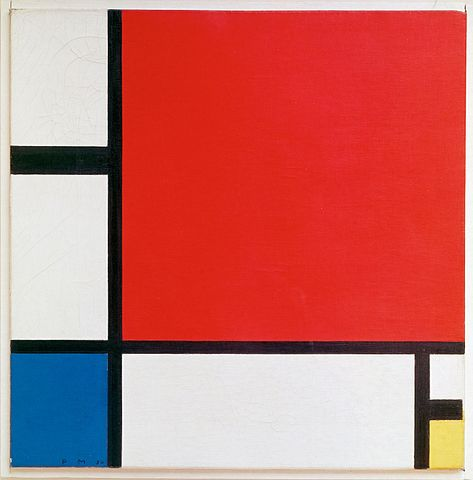

Piet Mondrian was a Dutch painter who was most famous for his works using large blocks of primary colors separated by bold black lines.
In this tutorial we're going to walk through programming a web app that lets us recreate something resembling one of Mondrian's works. We will create the front-end using HTML, CSS, and Javascript. Then we'll use Ruby to make a Sinatra server that will let us save and load our masterpieces.
This tutorial assumes you have Ruby installed and working, and have installed Sinatra with gem install sinatra.
Since we'll be using Sinatra to serve the site, we'll need to make sure our files are in the appropriate locations. Eventually our file structure will look something like this:
/mondrian controller.rb functions.rb mondrian_saves.csv /views index.erb /public mondrian.js /css mondrian.css reset.css
You can go ahead and set up empty files now and modify them as we get to the appropriate section, or just refer back here as needed to see what goes where.
Our next step is to prepare the HTML and CSS that set up a framework of black lines, and the palette that we'll use to fill our grid with colors. Go ahead and cut and paste this into index.erb:
You might be thinking that this looks a lot like an html file, and you'd be right. ERB stands for, "Embedded RuBy". It's a templating format that lets us weave Ruby code into web pages to create dynamic content. For this project we will use exclusively Javascript for the dynamic features, but using erb files is slightly more straightforward than plain html when we're using Sinatra.
Speaking of Sinatra, let's go ahead and set up a basic route in controller.rb, so our index page will load:
This code is pretty straightforward. The first line sets this file up as a Sinatra controller. The rest sets up how to respond when the Sinatra server recieves a request for the root of our app. In this case, serving the erb named index in the views folder.
Now let's set up the necessary CSS styling to make the Mondrian look Mondrian-ish. First mondrian.css:
Then, a simple CSS reset in reset.css to make sure things behave correctly:
At this point if we run our controller with ruby controller.rb and then point our browser at http://localhost:4567/ we should see our framework laid out:
Now that we have something to look at, it's time to use Javascript to make it it interactive. We'll make the palette squares clickable to set our paintbrush color, then make the individual canvass squares clickable to set thier color.
The first line sets up a variable to hold the current paintbrush color and sets the default to white. Lines 3-6 set up an event listener to delay the setup of our other event listeners until the html elements they are associated with are loaded to the DOM.
The addPaletteListeners function adds a click listener to each of the palette squares that calls paletteClicked. That function sets current_color to the background color of the palette div that was clicked. Since these divs have their background colors set by an external css stylesheet, we have to access them via window.getComputedStyle. Calling getPropertyValue("background-color") returns a string containing the rgb value of the current background color. So if we click the blue palette square, for instance, current_color will be set equal to "rgb(0, 0, 204)"
Next, addSquareListeners adds a click listener to each square that makes up the canvass. On click, squareClicked simply sets that square's background color to our paintbrush color stored in current_color.
Now if we run ruby controller.rb and visit http://localhost:4567/ again, we can see our page is now interactive!
Since we already set up the html and styling for the save button, we'll just need to add a click listener and functionality to make it work. Let's add the following to mondrian.js:
While the new listener code doesn't do anything we haven't seen before, we need to make sure to call it in the window load listener block around line 6 in mondrian.js with addSaveListener(); so that the listener is set up to call saveClicked.
In the first line of saveClicked we see something new. Since this time we've added a click listener to a link, an object which already has a click action defined by default, we call e.preventDefault() on the event object to keep from loading the location specified in the tag's href, then define our own behavior.
The function loops through all of the squares and adds their information to a Javascript object where a square's css id (like "row_1_box_1") is the key, and a string containing its rgb background color is the value. Once we've generated the 16 key-value pairs and stored them in save_data, we call sendSaveData() to push it to our back-end.
We use Javascript's XMLHttpRequest() object to form and send a POST to our server's (currently non-existent) "/save" route. In the process the save_data Javascript object is converted into a JSON string to facilitate its later conversion into a format that our Ruby back-end can understand.
It's time to start work on the behind-the-scenes portion of our app. This means extending our Sinatra controller to give us a place to push our save data, and adding Ruby functionality to write that save data somewhere permanent. For this project that means a CSV file on disk.
First let's take a look at the updated controller.rb:
There are several new things going on here. First, we've used require_relative to give us access to nuts-and-bolts of our server that will reside in functions.rb. This helps keep the controller file free of clutter. Requiring json will give us access to built in Ruby methods for converting JSON data sent from our Javascript into a Ruby hash that we can manipulate and save.
On line 5 we create a MondrianServer object. This is a Ruby class that we will define in functions.rb to act as an interface between our controller and the save file on disk.
Lines 11-14 show the addition of a POST route to the /save location that our front end will now be expecting. Here you can see the aforementioned conversion from JSON to a Ruby hash, then a call to save that hash using MondrianServer's save function. Let's go ahead a look at that now:
You can see that there are actually two new classes being defined. The first, MondrianServer, acts as a go-between for the controller and the second new class, CSVFileModifier, a utility class that takes care of the work of writing (and eventually reading) the CSV file that will store our saved paintings.
Currently we've initialized the MondrianServer with an instance of CSVFileModifier and created a save function which generates a timestamp (in Unix epoch format) to use as a name for the save. It then calls the CSVFileModifier function that adds the information to our save file.
Now let's take a closer look at the CSVFileModifier class itself. During initialization it sets up a variable that holds our save location. add_row_to_file is the function called by MondrianServer. It performs the two actions necessary to actually get the save info on disk. First it calls make_csv_line to turn the hash entry into a long string with each value separated by a comma. Then it calls append_to_csv_file to tack it on as a new line at the end of the save file.
Speaking of the save file. There is a little bit of setup that we need to do there. It's not strictly necessary for the save functionality, but we'll be wanting it shortly when we start working on getting that data back for a load function. Create mondrian_saves.csv in the same directory as the controller, then click "view raw" under the following and cut and paste it into your new file. Make sure you leave it as a single line. If you looked into the CSV format you'll see that we're setting up column headers for each of the values we'll need for a save. Those column headers map directly to the css id values of each of the color squares in the painting. I've also included a row with sample data so you can see the relationship between the column headers and the data. You can copy that over or not as you see fit.
That's it. You should now have a working save function! Go ahead and color in some squares and click the save button. You should see the data pushed into your save file almost instantly, though depending on your text editor you may need to manually refresh the file to see the changes.
We'll need to do two things behind the scenes. First, give the front-end a way to show what saves we have in our save file. Second, give it a mechanism to actually load that save file.
Here you can see the routes we added. They're fairly simple, just returning the results of a single function call to our MondrianServer. The /load route takes advantage of Sinatra's params, which is am automatically generated hash containing key-value pairs matching the html parameters passed with the associated request, to determine which save data to load. Let's look at those functions next.
In get_savelist we call a CSVFileModifier function that loads the content of the save file into a hash where the keys are the save names, and the values are the entire contents of the associated row. It then calls .keys on the hash, which returns an array of the keys in the hash, which is a list of savenames.
To actually load the save data we call get_row_from_file. The first step it takes is to use the same function mentioned above to load the save data into a hash. That means that when we return saves_hash[row_name] we're sending a hash where the keys are the css ids of the color squares and the values are the rgb strings for the appropriate colors. That gets converted to JSON and passed back to the controller for our Javascript front-end to fetch (once we add that functionality.)
First lets get the appropriate elements added to our page:
You can see we've added a Load and Reset button to the footer area next to the Save button. Below that, we've also added a hidden modal window that we'll use to display the list of saved pictures so the user can pick one to load.
Then we've added the styles to make the new buttons look like the Save button, and the styling to size the modal window and fade out the background when it's opened.
Now lets take a look at the additions to the front-end interactivity:
Just as I mentioned with the back-end, the new Javascript functions fall into one of two categories. One, presenting the list of saves for the user to choose from. Two, loading and displaying the painting colors to the screen.
There isn't much new to cover in the addLoadListener or getSaveToLoad functions. Once we've recieved the JSON formated response from the /savelist controller, we use JSON.parse to get the save list into an array and then call displaySavelist to make the modal window visible and populate it with the save names from the array. Once the list is displayed, addSavelistListeners preps the links to recieve a click, and we move on to phase two of the process.
Once a save name is clicked, savelistItemClicked sends a new GET request to the Sinatra controller. It uses string concatenation to append the desired savename into the the "save" parameter in the url. As mentioned earlier, this will be picked up by the Sinatra controller using params["save"] and passed to the MondrianServer object so it knows which save data to respond with.
Once the GET request listener recieves a response, it parses the recieved JSON into a Javascript object (with css ids as keys and background colors as values) and passes it to displayLoadedMondrian. That function gets an array containing the nodes for all of the squares from the DOM. It loops through the array getting the current square's css id and using that as a key for our load_data hash, retrieves the saved rgb value for that square. The current square's background color is set to the saved value.
At this point the Reset button functionality should seem fairly trivial. It's essentially a special case of the function that displays our load data, but with every cell loaded as white.
And that's it! You should now find yourself able to retrieve your creations for display. Click the LOAD button and select a save to have it loaded on screen.
There are quite a few things we could do at this point to extend our skills further. Our save names are pretty unintelligible, we could either reformat the timestamp before we display it into a more human-readable date. Alternatively, we could let the user enter a name for the save themselves. While we're on the subject of saves, right now we'll be keeping an ever-growing list. It would be nice to be able to delete saves, or even just remove saves more than a few days old. Better yet, why not make the saves a per-user function by storing them in a session?
While it wouldn't be very Mondrian-esque, there is no reason we couldn't make our palette freely editable. With the framework we have established, it wouldn't be too difficult.